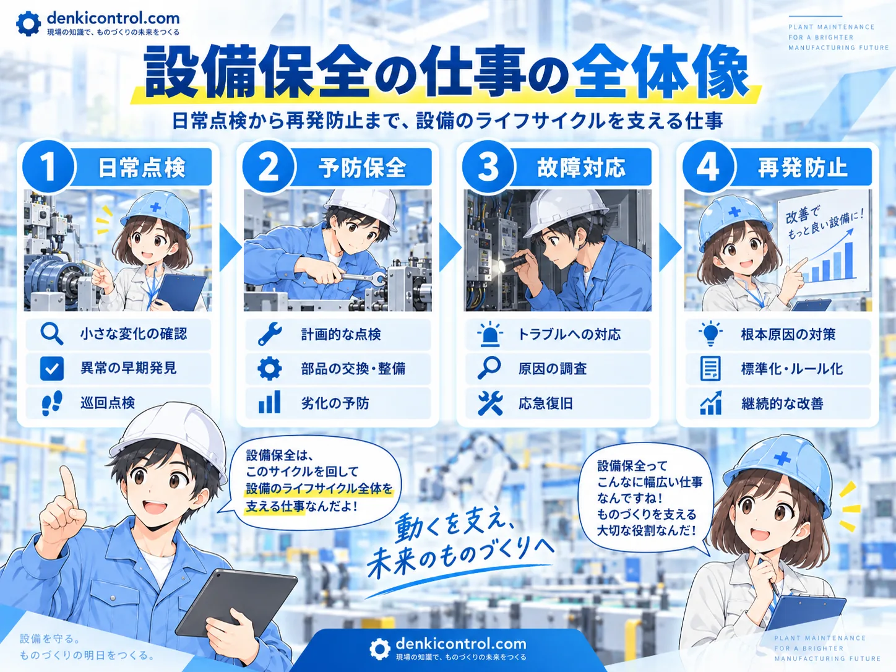
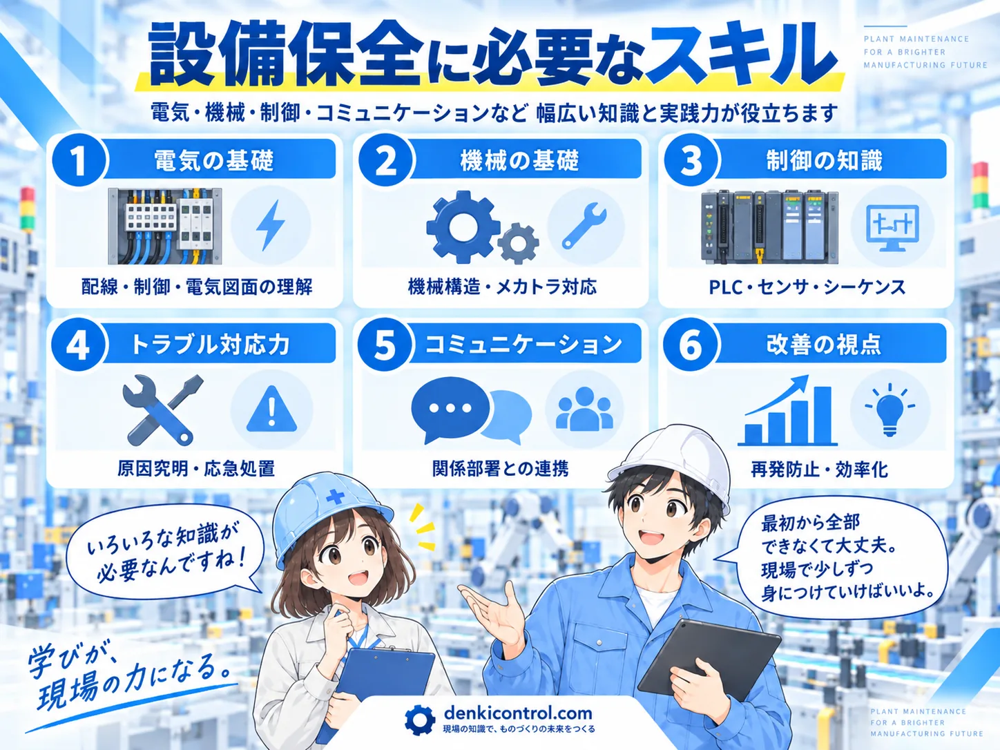
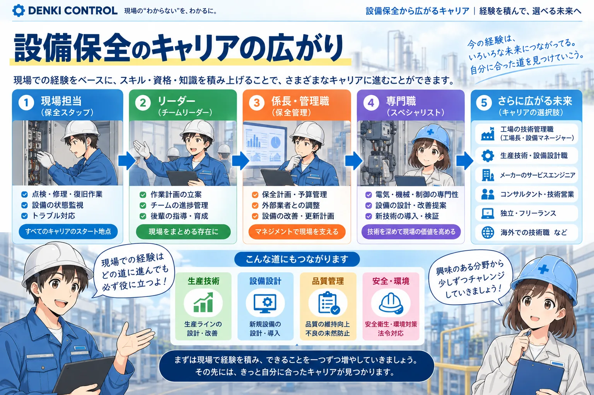

設備保全は「設備を止めない・早く復旧する」仕事
設備保全は、生産設備や機械を安定して動かすために、点検、整備、部品交換、故障対応、改善を行う仕事です。故障してから直すだけではなく、止まる前に異常の兆候を見つけることも重要な役割です。
現場によって担当範囲は違いますが、センサ、モータ、シリンダ、電磁弁、インバータ、PLC、機械要素など、複数分野を横断して設備を見る場面が多くあります。


設備保全って、壊れた機械を修理する仕事というイメージでした。

修理も大事だけど、実務では「壊れないようにする」「同じ故障を繰り返さない」まで含めて考えることが多いよ。
設備保全の仕事は4つの流れで考えると分かりやすい
設備保全の仕事は、単発の修理ではなく、日常点検 → 予防保全 → 故障対応 → 再発防止を繰り返す仕事です。4つをつなげて見ると、なぜ点検記録や原因分析が必要なのかも理解しやすくなります。
日常点検・巡回
異音、振動、温度、漏れ、摩耗、センサ状態などを確認し、普段と違う小さな変化を早めに見つけます。
予防保全・定期整備
清掃、給油、締付け、消耗部品の交換、測定などを計画的に行い、突発停止のリスクを下げます。
故障対応・復旧
停止時は、症状、電源、I/O、センサ、アクチュエータ、機械側の状態を順に確認し、原因を切り分けて復旧します。
再発防止・改善
原因を記録し、部品選定、配線、機構、制御条件、点検周期や作業手順を見直して、同じトラブルを繰り返さない仕組みにします。
必要スキルは「6つの柱」で整理すると学ぶ順番が見えやすい
設備保全では、一つの専門だけで設備全体を判断できない場面があります。最初から全部を深く覚える必要はありませんが、電気・機械・制御を横断して原因を切り分けるための基礎を少しずつ増やしていくことが重要です。
1. 電気の基礎
DC24V、リレー、センサ、モータ、電源、電気図面など。電圧や信号を追うための土台です。
2. 機械の基礎
ベアリング、ベルト、チェーン、軸、締結部など。摩耗やガタ、異音の原因を考えるために役立ちます。
3. 制御の知識
PLC、I/O、センサ、インターロック、シーケンスを理解すると、「なぜ動かないか」を追いやすくなります。
4. トラブル対応力
現象を整理し、電気・機械・空圧・制御のどこに原因があるかを確認結果から絞り込む力です。
5. コミュニケーション
製造、品質、生産技術、メーカーなどと情報を共有し、停止状況や復旧方針を正確につなぎます。
6. 改善の視点
直して終わりにせず、再発防止、標準化、点検周期の見直しまで考えることで設備の安定性を高めます。

当サイトで先に押さえたい記事
未経験から目指すなら、いきなり全部を覚えなくていい
設備保全は扱う範囲が広いため、最初から電気・機械・PLC・空圧を全部深く覚える必要はありません。まずは安全に確認する手順と、担当設備でよく使う機器から覚えていく方が実務につながります。
未経験なら、点検や部品交換から入り、次に電気図面やI/O確認、故障原因の切り分けへ進むと理解しやすくなります。
経験を積むほど、設備保全から広がるキャリアは増えていく
まずは現場担当として、点検・修理・復旧を経験します。その後、作業計画や後輩育成を担うリーダー、保全計画や予算・更新を管理する管理職、電気・機械・制御を深める専門職など、得意分野に合わせて役割を広げられます。
さらに、生産技術、設備設計、品質・安全、メーカーのサービスエンジニアなど、保全で身につけた「設備を見て原因を考える力」を活かせる道もあります。大切なのは肩書きより、どこまで自分で原因を追い、改善までつなげられるかです。

近い職種も比較しておくと役割が整理しやすくなります。PLC・制御設計は設備を動かす制御をつくる側、生産技術は工程や設備を含めて生産の仕組みをつくる側です。
転職求人を見るときに確認したいポイント
- 保全対象：生産設備、ユーティリティ、建物設備など、何を担当するのか
- 担当範囲：点検中心か、故障対応・PLC・改善まで担当するのか
- 勤務形態：日勤のみか、交替勤務・夜間呼出しがあるか
- 内製と外注：自社で直す範囲と、メーカーへ依頼する範囲
- 教育環境：未経験の場合、図面・PLC・機械保全を学べる仕組みがあるか
転職サービスは「今すぐ転職する人」だけのものではない
自分の経験がどの職種で評価されるのか、求人ではどんなスキルが求められているのかを確認するだけでも、今後伸ばすスキルを考える材料になります。
転職サービス比較は準備中です
キャリアカテゴリ側のSTEP4が整ってから、設備保全向けの見方も追加します。
この記事は役に立ちましたか？
今後の記事づくりの参考にします。どちらかを選ぶだけで回答できます。
回答は匿名で集計し、個人情報の入力はありません。
関連する仕事を比較する
未経験から3職種の違いと学ぶ順番をまとめて見たい方は、未経験から電気・FAエンジニアを目指すには？も参考にしてください。
職種名だけで判断せず、担当する範囲や現場での役割を比べると、自分が伸ばしたい方向を整理しやすくなります。


まとめ
設備保全は、設備が止まってから直すだけではなく、点検・予防保全・故障対応・改善を通して安定稼働を支える仕事です。
電気、機械、空圧、PLCを横断して見る場面が多いため、最初から全部を深く覚えるより、担当設備の故障を一つずつ切り分けながら知識を広げる方が実務的です。
次は必要スキルをつなげて学ぶ
制御・回路・PLC入出力など、設備保全でよく使う基礎へ進めます。